礦物與生活
礦物基本介紹 (停止更新)
礦物
- 天然產出的均質固體
- 無機作用生成
- 具一定的化學組成與物、化性
- 特定的結晶外型與結構
寶石
-
狹義定義
-
礦物中較具有
- 高經濟價值
-
美麗的外表
-
顏色
-
自色(Idioachromatic color)
礦物天生自帶的顏色，由其化學式中必須的元素決定 -
他色(Allochromatic color)
外來的顏色，由微量雜質或晶體缺陷所致
-
自色(Idioachromatic color)
- 外型
-
切工
- 刻面切工
- 蛋面研磨
- 圓珠研磨
- 震桶、滾桶研磨
- 鑄造
- 雕刻
- 特殊光性
-
顏色
-
穩定
- 化性:耐腐蝕、風化
- 物性:硬度高
- 具稀少性(有價值)
-
貴重寶石(Precious Stone)
-
鑽石(Diamond)
- 化學式:C
- 等軸晶系
- 產地:波札那、南非、納米比亞、安哥拉、俄羅斯、加拿大、澳洲
-
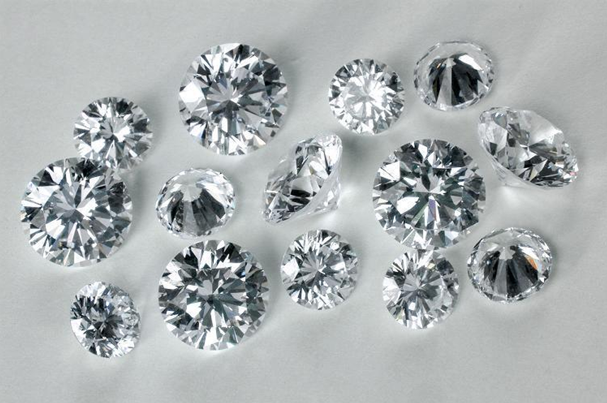
紅寶石(Ruby)
- 化學式:Al2O3
- 三方晶系
- 產地:緬甸、莫三比克、泰國、柬埔寨、斯里蘭卡
-
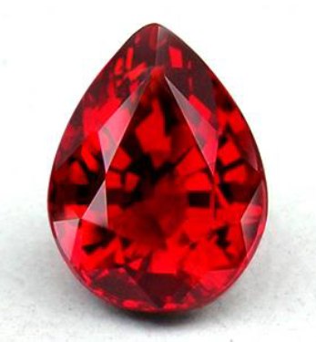
藍寶石(Sapphire)
- 化學式:Al2O3
- 三方晶系
- 產地:斯里蘭卡、緬甸、喀什米爾、馬達加斯加、澳洲、泰國、越南
-
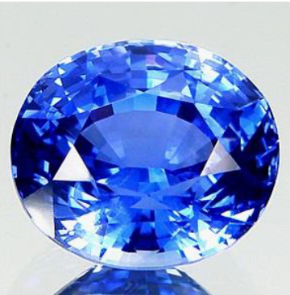
祖母綠(Emerald)
- 化學式:Be3Al2(SiO3)6
- 六方晶系
- 產地:哥倫比亞、巴西、尚比亞
-
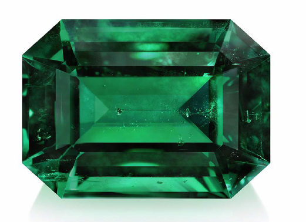
-
-
半寶石(Semi-precious Stone)
其餘寶石-
變石(Alexandrite)
- 化學式:Al2BeO4，Cr3+取代Al3+
- 俗稱:亞歷山大石、金綠寶石
- 正交晶系
- 產地:斯里蘭卡、巴西、俄羅斯、印度、坦尚尼亞
-
在日光跟燭光下有不同顏色
- 日光:灰綠、淡黃綠至藍綠色
- 燭光:褐紅、、紫紅色
-
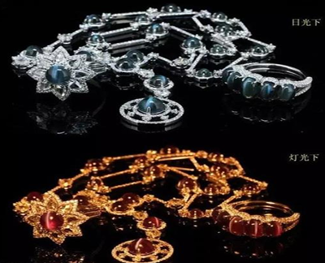
菱錳礦(Rhodochrosite)
- 化學式:MnCO3
- 三方晶系
- 產地:阿根廷、美國、祕魯、羅馬尼亞、中國、南非
-
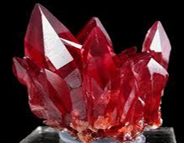
瑪瑙(Agate)
- 化學式:SiO2
- 三方晶系
- 產地:中國、印度、巴西、美國、埃及、馬達加斯加、澳洲、墨西哥
-
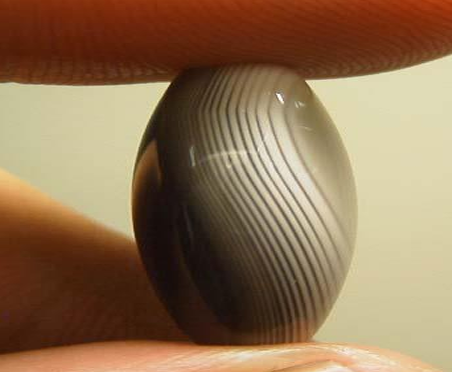
孔雀石(Malachite)
- 化學式:Cu2(OH)2CO3
- 俗稱:石綠
- 單斜晶系
- 產地:剛果、贊比亞、納米比亞、俄羅斯、澳洲、美國
-
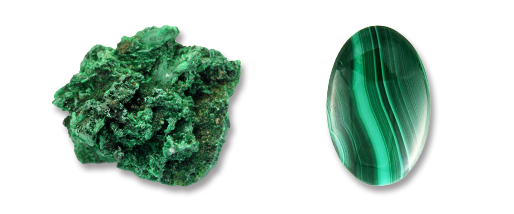
軟錳礦(Pyrolusite)
- 化學式:MnO2
- 四方晶系
- 產地:中國、南非、澳大利亞，加納、巴西、印度、烏克蘭
-
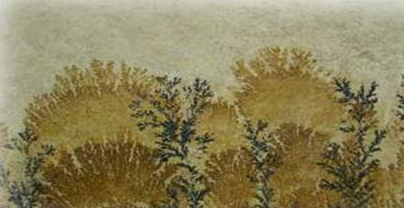
玫瑰石(Rhodonite)
- 化學式:CaMn3Si5O15
- 三斜晶系
- 產地:臺灣、美國、墨西哥、摩洛哥
-
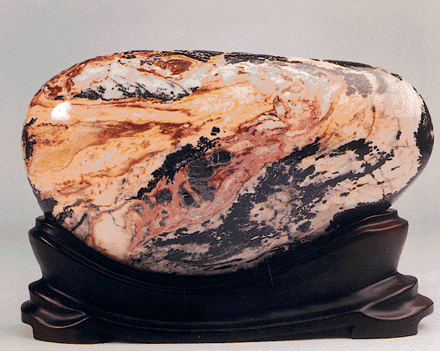
石榴子石(Garnet)
-
化學式:X3Y2(SiO4)3
A:Ca/Mg/Fe/Mn(II)
B:Al/Fe/Cr(III) - 產地:坦尚尼亞、肯亞、莫桑比克、馬達加斯加、斯里蘭卡、巴西、俄羅斯、美國、緬甸
-
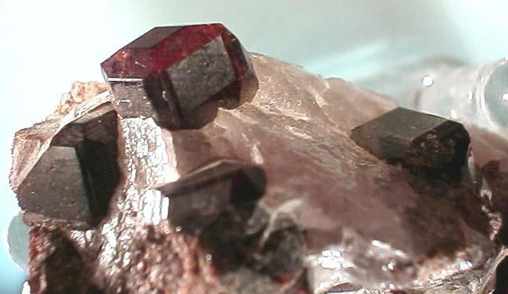
橄欖石(Olivine)
- 化學式:(Mg/Fe)2SiO4
- 斜方晶系
- 產地:美國、緬甸、巴基斯坦、中國、巴西
-
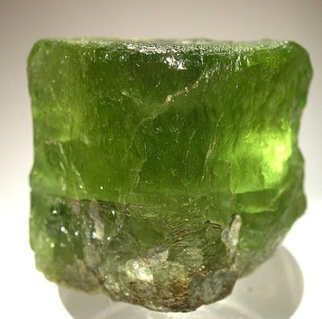
沙漠玫瑰(Desert Rose Stone)
- 由石膏或重晶石結晶而成
- 俗稱:戈壁石、風雕石
- 產地:東非到阿拉伯半島的乾燥沙漠地帶
-

葡萄石(Prehnite)
- 化學式:Ca2Al2(OH)2Si3O10
- 斜方晶系
- 產地:南非、美國、澳洲、法國、印度、義大利、中國、瑞士
-
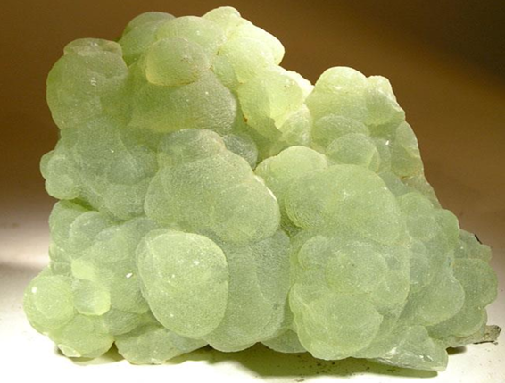
-
-
礦物中較具有
-
廣義定義
-
經加工後成為配飾，在市場上有一定價值的
- 礦物
- 似礦物
- 岩石
- 化石
- 合成之物質
-
非礦物之寶石
-
人工合成物(非自然產出)
例:- 合成紅寶石
- 合成藍寶石
- 合成祖母綠
-
內含物(非均勻成分)
例:髮晶(Quartz with inclusions)
- 化學式:SiO2,包裹金紅石(TiO2)
- 三方晶系
- 產地:巴西、中國、馬達加斯加、俄羅斯
-

-
岩石
例:青金岩(Lapis lazuli)
- 以青金石為主，並含黃鐵礦、方解石等礦物集合體
- 產地:美國、阿富汗、蒙古、緬甸、智利、加拿大、巴基斯坦、印度、安哥拉
-

-
非晶質(晶體內部非有序排列)
例:蛋白石(Opal)
- 化學式:SiO2(H2O)n
- 產地:澳洲、衣索比亞、墨西哥、巴西、瓜地馬拉、宏都拉斯
-
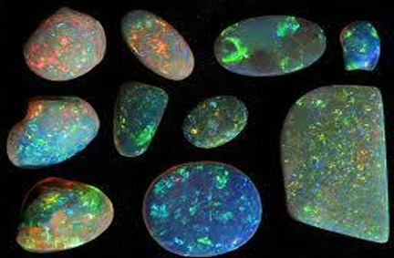
-
非晶質(玻璃質)
例:黑曜石(Obsidian)
- 化學式:SiO2(60~75%)又含Al2O3、FeO、Fe3O4
- 產地:墨西哥、美國、日本、冰島、匈牙利、義大利、俄羅斯、厄瓜多、瓜地馬拉
- 是一種火山玻璃
-
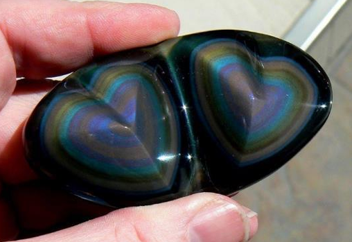
-
生物寶石
例:珍珠(Pearl)
- 化學式:CaCO3
- 產地:中國、日本、法屬玻里尼西亞、澳洲、印尼、菲律賓
-
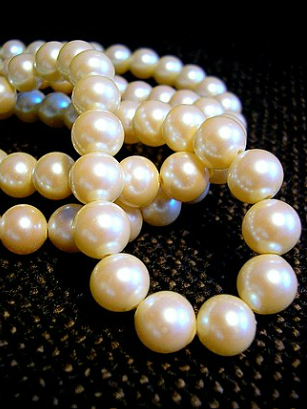
琥珀(Amber)
- 化學式:C10H16O·(H2S)
- 產地:波羅的海沿岸（波蘭、俄羅斯等）、緬甸、多明尼加、墨西哥、中國
-
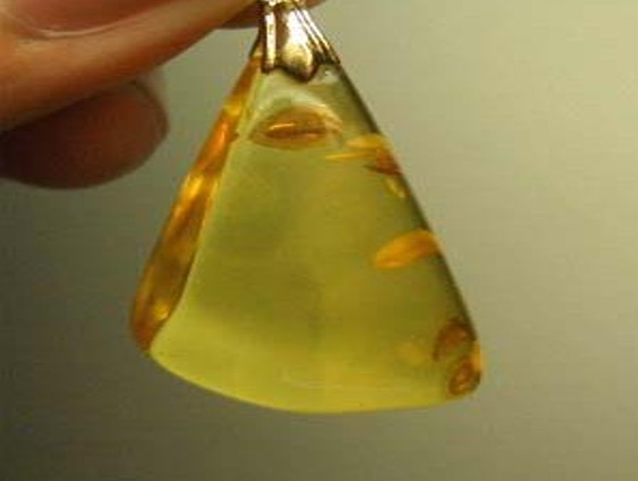
珊瑚(Coral)
- 化學式:CaCO3
- 產地:義大利、日本、台灣、印尼、澳洲
-
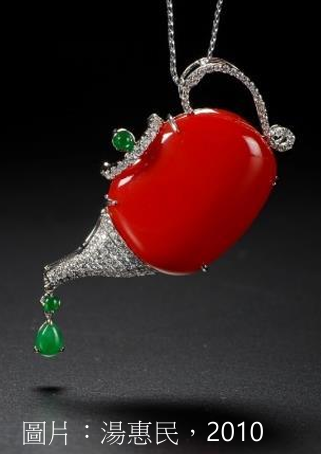
-
化石寶石
例:矽化木(Petrified Wood)
- 化學式:SiO2
- 產地:美國、印尼、馬達加斯加
-

彩斑菊石(Ammolite)
- 化學式:CaCO3
- 產地:加拿大
-
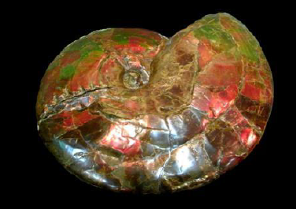
珊瑚玉(Coral Jade)
- 化學式:SiO2
- 產地:印尼、臺灣、中國
-

-
人工合成物(非自然產出)
-
經加工後成為配飾，在市場上有一定價值的
其他礦物
水晶(Crystal)
- 化學式:SiO2
- 六方晶系
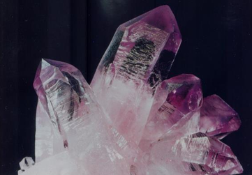
螢石(Fluorite)
- 化學式:CaF2
- 立方晶系
- 產地:南非、中國、墨西哥、蒙古、英國、美國、加拿大、坦尚尼亞、盧安達、阿根廷
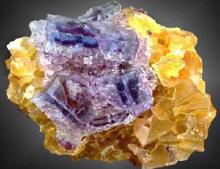
方鉛礦(Galena)
- 化學式:PbS
- 立方晶系
- 產地:美國、澳洲、德國、英國、中國
- 最重要的鉛礦石
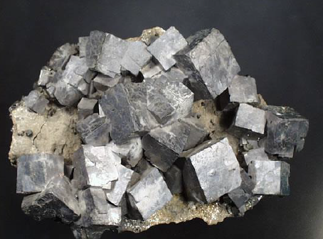
陽起石(Actinolite)
- 化學式:Ca2(Mg/Fe)5Si8O22(OH)2
- 單斜晶系
- 產地:廣泛，臺灣東部
- 深色玉石的成分之一，可作觀賞石
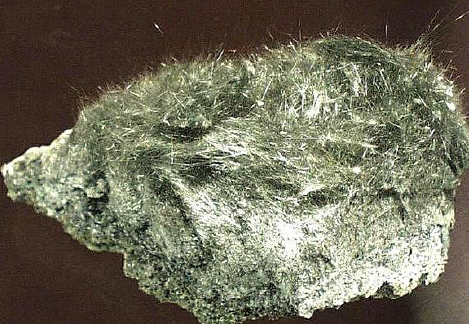
電氣石(Tourmaline)
- 化學式:(Na/K/Ca)(Mg/Fe/Mn/Li/Al)3(Al/Fe/Cr/V)6Si6O18(BO3)3(O/OH/F)4
- 俗稱:碧璽
- 六方晶系
- 產地:巴西、斯里蘭卡、愛爾巴島、巴基斯坦、阿富汗、緬甸
- 深色玉石的成分之一，可作觀賞石
- 具熱電性和壓電性
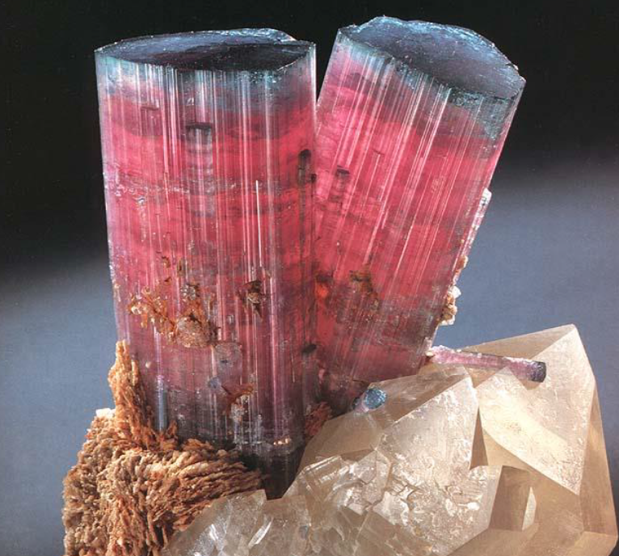
黃鐵礦(Pyrite)
- 化學式:FeS2
- 俗稱:愚人金(與黃金相像)
- 等軸晶系
- 產地:西班牙、秘魯、義大利、捷克，臺灣:瑞芳金瓜石、花蓮秀林、萬榮、卓溪
- 提煉硫、製造硫酸的主要原料
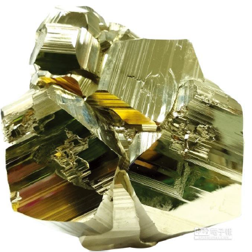
辨認
- 條痕辨別:
金礦:金黃色
黃鐵礦:綠黑色
赤鐵礦(Hematite)
- 化學式:Fe2O3
- 俗稱:黑膽石
- 六方晶系
- 產地:俄羅斯、美國、巴西、法國、中國，臺灣:南投
- 紅色系天然無機顏料，火星紅色地表主因之一
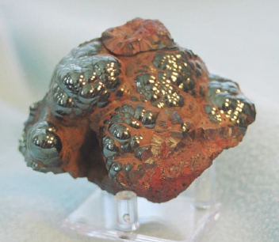
辨認
- 條痕辨別:
紅褐色
磁鐵礦(Magnetite)
- 化學式:Fe3O4
- 等軸晶系
- 產地:美國、瑞典、俄羅斯、巴西、中國、智利，臺灣:花蓮秀林、大屯火山群、北部與西部海岸
- 具亞磁鐵性，煉鐵的重要原料
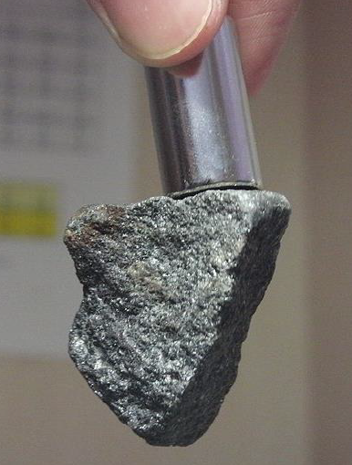
辨認
- 晶體常作八面體或十二面體